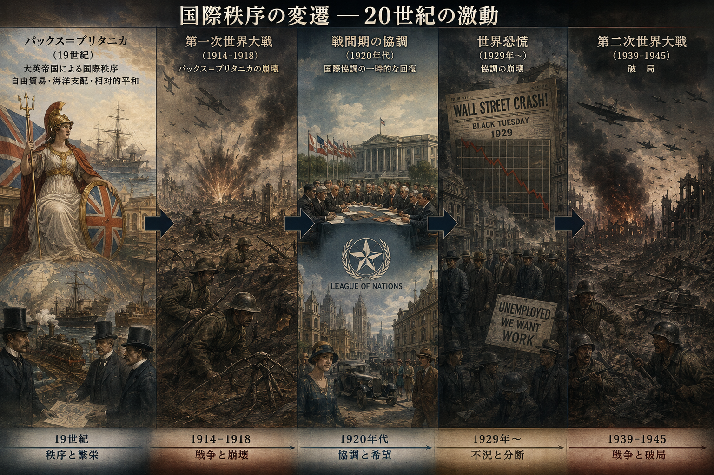

09/GATT体制
国際政治経済I
2026-06-15
今日の目次
- はじめに
- GATTの成立
- GATTの全体像
- GATTからWTOへ
- 二国間主義と多国間主義
- まとめ
はじめに
先週のRPより (1/2)
2レベルゲーム論において、民主主義国は国内の多様性が範囲を狭め、私的情報も隠すことで交渉力が高いとかんがえられているが、それは果たして有利に働くのかという点が疑問だった。民主主義国は情報が比較的オープンなので様々な団体からの圧力によって狭められた範囲がそのまま底値として明らかになってしまうのではないかと感じた。
先週のRPより (2/2)
授業内容に基づけば、多国間主義の実現のためには各国の交渉力が低い方が好ましいと推測できるが、権威主義国家の方が交渉力が低いとすれば権威主義国家が増えれば多国間主義の実現に近づくことになるのだろうか。
ドーハラウンドの挫折以降、GATTでは二か国・地域間の協定が中心となってきたが、ウクライナ侵攻、イスラエルのガザ侵攻、そしてアメリカの介入以降の国際秩序の変動を踏まえると、GATTの本来の目的が再び果たされ、多国間交渉の長期的停滞が解消される日は来るのだろうか
本日の目的と到達目標
目的
戦後の自由貿易体制であるGATTの歴史的展開や現状を概観するとともに、その多国間主義原則について理論的に考察する。
到達目標
- ハバナ憲章をめぐる混乱を踏まえて、GATT体制がどのような性格を持って成立したかを説明できる。
- GATTの基本原則を3つ列挙し、それぞれ説明できる。
- 紛争処理手続きに着目して、GATTがWTOに再編された理由を説明できる。
- GATTの多国間主義のメリットを二国間主義と比較しながら説明できる。
本日の授業の位置付け

GATTの成立
Think-pair-share
9世紀から第二次世界大戦に至るまでの貿易をめぐる国際秩序の展開を次のキーワードから説明してみてください。
キーワード：パックス・ブリタニカ、金本位制、古典派経済学、ヤング案とドーズ案、世界恐慌、ブロック経済
- Think (1分)
- Pair (2-3分)
- Share (2-3分)
復習：パックスブリタニカの興亡

GATTの成立
1941年 大西洋憲章
- 戦後秩序に関する米英合意
- 埋め込まれた自由主義
1944年 ブレトン・ウッズ会議
- 自由貿易促進のための固定相場制構築
- ブレトン＝ウッズ体制…ドルを基軸通貨に
1947年 ハバナ憲章
- 国際貿易機関 (ITO)の設立に合意
- しかし米英の国内世論の反発で発効できず
1948年 関税及び貿易に関する一般協定
- General Agreement on Tariffs and Trade
- ハバナ憲章の一部（貿易・関税と紛争処理）を暫定的に発効
- 1995 年に世界貿易機関 (WTO) へと発展

GATTの全体像
質問
第5回のスライドを見て、埋め込まれた自由主義とはどのようなものか改めて確認してください。
GATTの基本原則
多国間主義に基づく自由貿易の推進
- 一般的最恵国待遇（第1条）…締約国が他の締約国に与えた利益を残りの締約国に対して「即時かつ無条件に」与えなければならない。
- 内国民待遇（第3条）…輸入品は国内産品と同様に扱わなければならない。
- 数量制限の一般的禁止（第11条1項）…関税以外の輸入規制手段（割当や許可制）は原則禁止。
基本原則の例外
埋め込まれた自由主義→国家の自律性への配慮
- 農産物における数量制限の容認（第11条2項）
- 国際収支悪化を防止するための制限（第12条）
- 農業補助金の容認（第16条）
- 発展途上国による制限の容認（第18条）
- 特定の産品に関する緊急制限措置（第19条）
- いわゆる「セーフガード」
- 例：ねぎ・生しいたけ・畳表（2001年）
- いわゆる「セーフガード」
多角的貿易交渉（ラウンド）
加盟国が一堂に会して自由化交渉
| ラウンド | 時期 | 概要 |
|---|---|---|
| 第1-5回 | 1947-62 | 品目別交渉→自由化停滞（-26カ国) |
| ケネディ | 1964-67 | 一括交渉の開始 (74カ国) |
| 東京 | 1973-79 | 非関税障壁も交渉対象に (82カ国) |
| ウルグアイ | 1986-94 | 農産品・サービス貿易の自由化、WTO設立 (93カ国) |
| ドーハ | 2001- | 環境保護・投資環境の整備など、08年に事実上頓挫 (153カ国) |
GATTからWTOへ
質問
第5回のスライドを見て、1970年代以降に戦後国際秩序がどのような変容を経験したのか改めて確認してください。
GATT紛争処理手続き
基本的な流れ
- 当事者間協議
- 紛争処理小委員会（パネル）の設置
- パネル勧告案の採択
コンセンサス方式…すべての国が拒否権
- パネル設置、勧告案採択で要求
- 不利な側の妨害→機能不全
GATTからWTOへ
1960年代〜 アメリカの経常赤字→ドル信用低下
- ベトナム戦争の長期化
- 旧敗戦国の経済復興
- 国内福祉の拡大
70年代〜 アメリカの新保護主義
- 1971年 ニクソン・ショック
- 金ドル交換の一時停止→ブレトン・ウッズ体制の崩壊
- 1974年 通商法301 条（Section 301）
- 「貿易不公正国」に対する制裁
- 機能不全の紛争処理手続きを回避
1995年 世界貿易機関（World Trade Organization: WTO）発足
- ウルグアイラウンドでGATTを発展的改組
- 米による紛争処理手続き改善要求
- ネガティブ・コンセンサス方式…全加盟国が反対しない限り提案が採択
二国間主義と多国間主義
GATTと相互主義
基本原則…多国間主義に基づく自由貿易の推進
- 一般的最恵国待遇、内国民待遇、数量制限の一般的禁止
- 多角的貿易交渉（ラウンド）
ロバート・コヘインの相互主義(reciprocity)分析1
- 特定相互主義
- 拡散相互主義
特定相互主義 (specific reciprocity)
特定のパートナー同士が比較的同時にお互いに同価値のものを交換すること
二国間交渉が典型例
- 例：2030年までの日米相互関税撤廃合意
- 特定のパートナー：日米
- 同時性：2030年までに
- 同価値の交換：相互に関税撤廃
Think-pair-share
日本がアメリカ、中国、EU、韓国と貿易の自由化を目指して交渉するとします。
- 各国と個別交渉を繰り返して自由化を目指すとしたら、どのような問題が起きそうですか。
- もしこれらの国が同じ会議に集まって一括で交渉したとしたら何かメリットはあるでしょうか。
拡散相互主義 (diffuse reciprocity)
単独の相手ではなくグループ全体相手に、だいたい同じ価値と思えるものを、必ずしも同時ではないタイミングで交換すること
GATTの多国間主義はこちら
- ラウンドの一括関税引き下げ…先進国が途上国に一方的に譲歩
- 「出世払い」的な意図
利点…特定相互主義の問題解決
- 取引費用の削減
- 長期的な信頼関係の構築
問題…フリーライダー問題
まとめ
先週のRPより
TBD
本日の目的と到達目標
目的
戦後の自由貿易体制であるGATTの歴史的展開や現状を概観するとともに、その多国間主義原則について理論的に考察する。
到達目標
- ハバナ憲章をめぐる混乱を踏まえて、GATT体制がどのような性格を持って成立したかを説明できる。
- GATTの基本原則を3つ列挙し、それぞれ説明できる。
- 紛争処理手続きに着目して、GATTがWTOに再編された理由を説明できる。
- GATTの多国間主義のメリットを二国間主義と比較しながら説明できる。
次回までに
事後学習
- 授業資料を見直し、目標到達をセルフチェック
- Moodle上でのリアクションペーパー入力（木曜日まで）

GATT体制